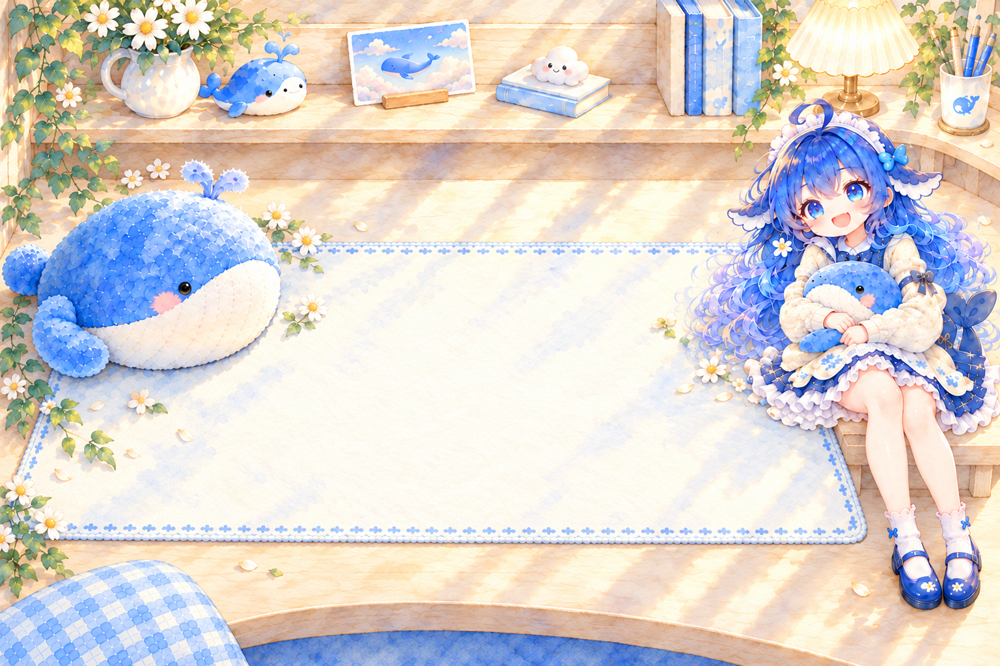
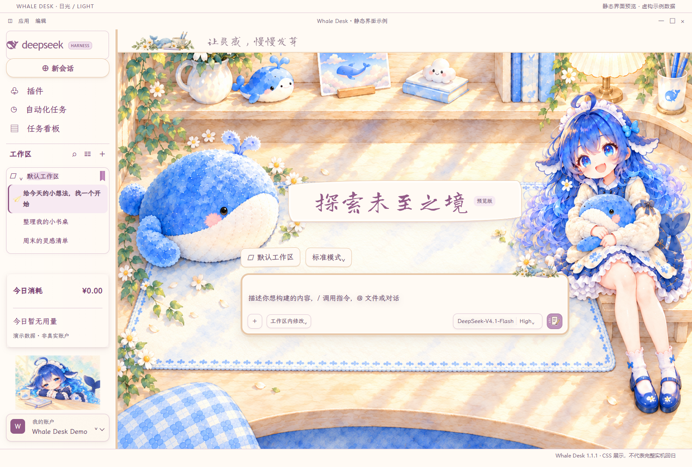
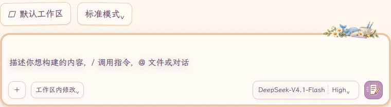
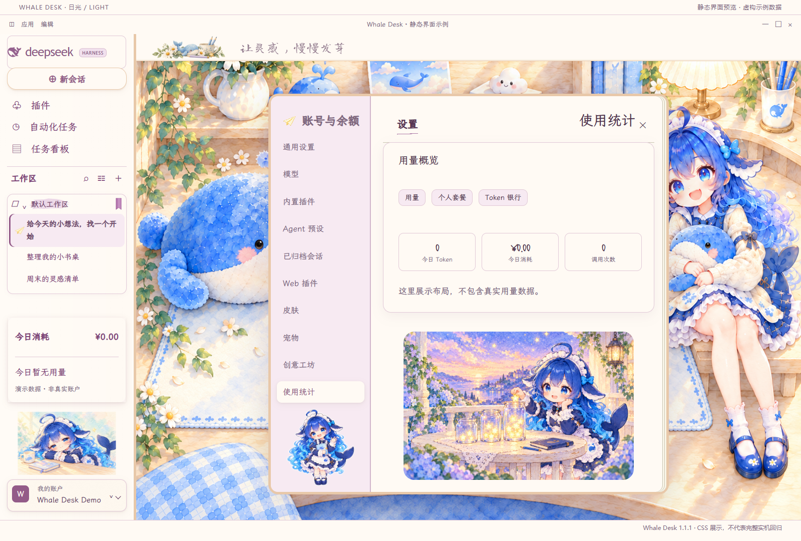
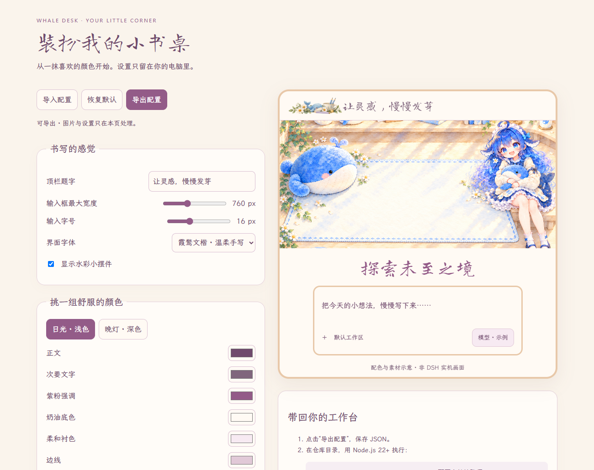
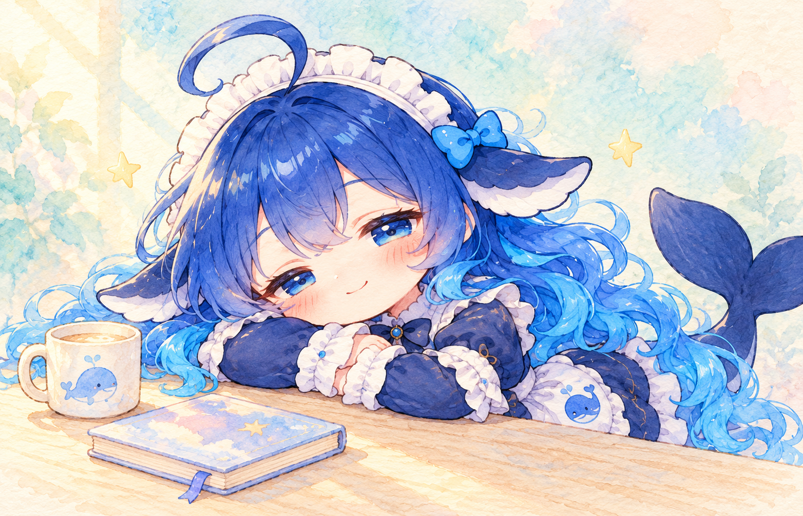

奶油暖木 × 水彩鲸伴 × 一盏暖灯

保留熟悉的布局，换成喜欢的样子。

让界面柔和一点
有一点小书桌感
留一点可爱在身边
让输入区收一点，画面就松一点。
默认输入区最大宽度
DIY 支持 560—1100 px

这句顶栏题字，也可以换成你自己的话。
一句小小的提醒，陪你开始今天。
不用很热闹，温柔地待在那里就很好。
正文用文楷，标题多一点手写的呼吸感。
蓝色鲸鱼和雏菊，添一点梦幻。
点开设置时，也能遇到一张喜欢的小画。

首页、侧栏与设置
自己决定留多少装饰
配图不会改变桌宠
附离线配置器，继续 DIY 自己的小书桌。

编辑 → 导出 JSON → 应用配置 → 在 DSH 查看
应用配置需要 Node.js 22+；默认皮肤无需构建。
需要先有 DeepSeek Harness（DSH）。
搜索下方项目名，解压后找到皮肤文件夹。
详细步骤都在 README 和使用手册里。
skins/whale-desk
放进 DSH 实际数据目录下的 skins。
设置 → 皮肤 → 鲸伴 · 水彩小书桌
列表没更新时，完全退出并重新打开 DSH。
图册、说明书、示例配置，都在同一个仓库。
适用于 DSH，不是 DeepSeek 手机 App 主题。
喜欢的工作台，也可以是开始的理由。

基于 Alphazerolan/diy-journal-skin 的非官方二创。
本页插画沿用上游；书桌背景与水彩摆件为 AI 生成。
随附插画按项目说明限个人非商业使用。